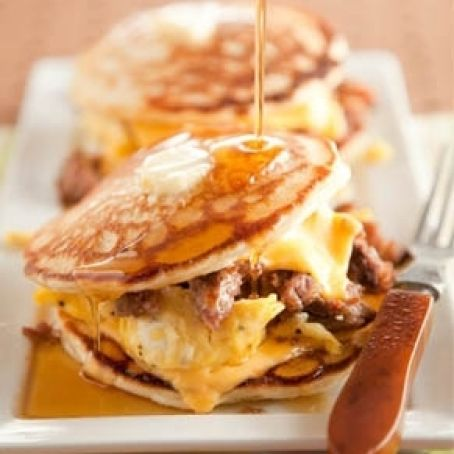

Preheat oven to 350 degrees.
Line a baking pan with parchment paper.
Lay bacon strips side by side.
Sprinkle with brown sugar.
Bake until bacon is fully cooked, about 15 to 18 minutes.
Let cool and then chop.
In a 2-cup glass measuring cup, combine corn, milk, and 1/4 cup sugar.
Puree with an immersion blender until smooth. Or you can use a food processor.
Whisk in eggs.
In a large bowl, whisk together flour, remaining 1/4 cup sugar, baking powder, and salt.
Add liquid ingredients to dry and stir just until flour disappears.
Place a small amount of butter on a hot griddle. Once melted, pour batter onto griddle,
forming
4-inch pancakes.
Sprinkle tops with bacon.
Flip over once bubbles form and continue to cook until cooked through.
Serve with butter and maple syrup.
Sausage Pancake Egg Sandwich
Ingredients
6 bacon slices
1/4 cups light brown sugar
1 can sweet corn drained
1/2 of whole milk
1/2 cups of granulated sugar, divided
2 large eggs lightly beaten
1 1/4 cups of all-purpose flour
1 teaspoon of baking powder
1/2 teaspoon of salt
butter for cooking and serving
maple syrup

Method
Heat a nonstick griddle to medium heat while you prepare the pancake batter.
Combine flour and salt.
Mix milk, 2 eggs, oil together and add to flour mixture.
Butter your skillet and then add 1/4 cup of oil to the skillet, which keeps butter
from
burning.
Ladle about 1/4 cup of the batter, for each pancake, onto the skillet.
The bottoms of the pancakes should brown in roughly 2 to 4 minutes.
Flip to finish cooking the other side. Cook until lightly golden brown.
Place slice of American cheese on top of pancake, top with scrambled eggs.
Top scrambled eggs with another slice of cheese and place another pancake on top.